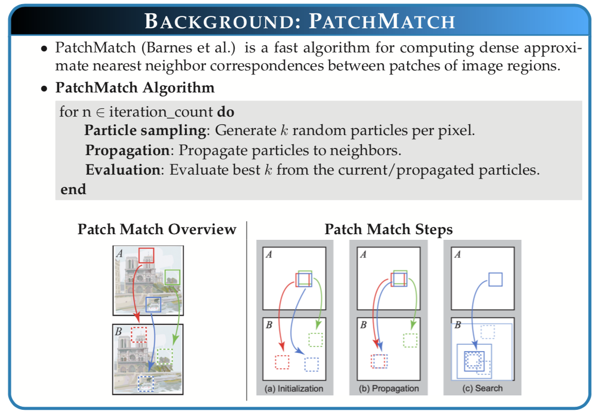
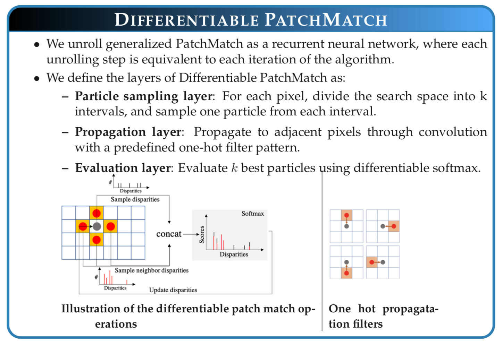
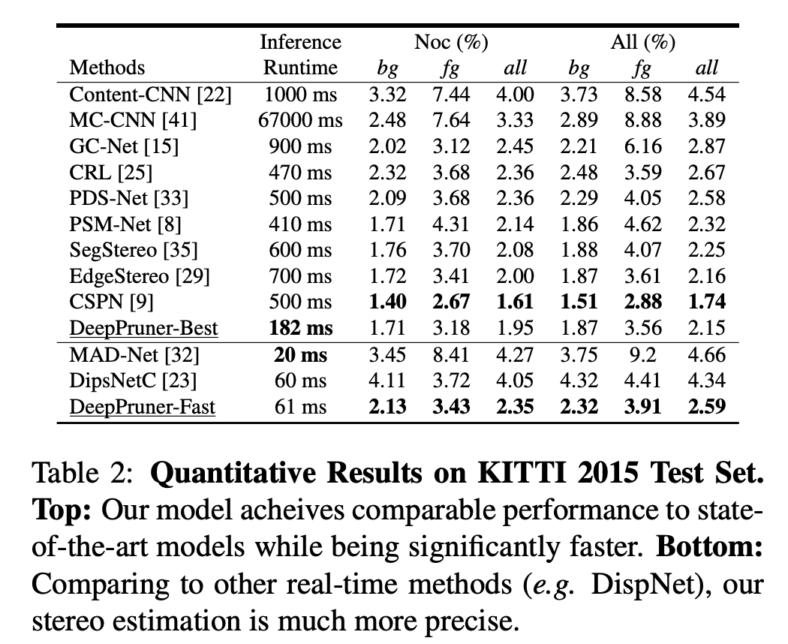
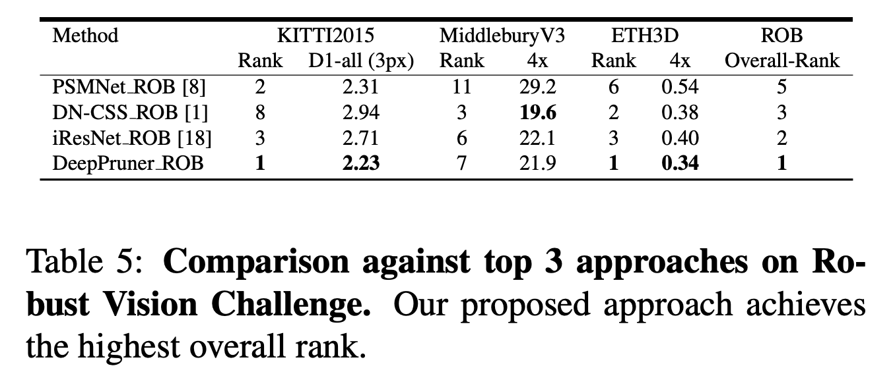
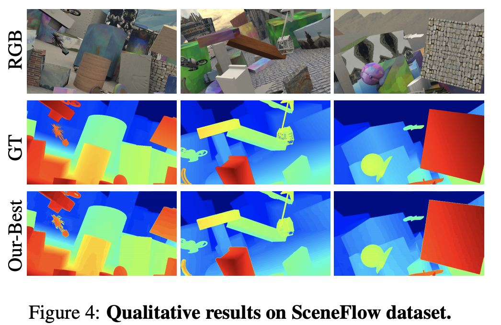
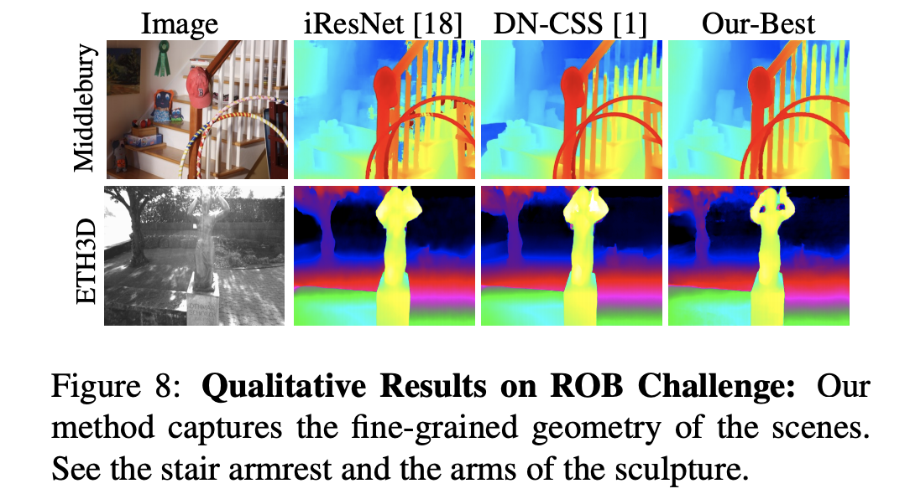

DeepPruner: Learning Efficient Stereo Matching via Differentiable PatchMatch
3Massachusetts Institute of Technology
Abstract
Our goal is to significantly speed up the runtime of current state-of-the-art stereo algorithms to enable real-time inference. Towards this goal, we developed a Differentiable PatchMatch module that allows us to discard most disparities without requiring full cost volume evaluation. We then exploit this representation to learn which range to prune for each pixel. By progressively reducing the search space and effectively propagating such information, we are able to efficiently compute the cost volume for high likelihood hypotheses and achieve savings in both memory and computation. Finally, an image guided refinement module is exploited to further improve the performance. Since all our components are differentiable, the full network can be trained end-to-end. Our experiments show that our method achieves competitive results on KITTI and SceneFlow datasets while running in real-time at 62ms.
Overview of DeepPruner
Overview of Patch Match (Barnes et al.) & Differentiable Patch Match
|  |  |
Quantitative Results
|  |  |
Qualitative Results
|  |  |
Citation
DeepPruner: Learning Efficient Stereo Matching via Differentiable PatchMatch
Shivam Duggal, Shenlong Wang, Wei-Chiu Ma, Rui Hu, Raquel Urtasun
Supplementary |
arXiv preprint |
Code
BibTex
@InProceedings{Duggal_2019_ICCV,
author = {Duggal, Shivam and Wang, Shenlong and Ma, Wei-Chiu and Hu, Rui and Urtasun, Raquel},
title = {DeepPruner: Learning Efficient Stereo Matching via Differentiable PatchMatch},
booktitle = {The IEEE International Conference on Computer Vision (ICCV)},
month = {October},
year = {2019}
}
author = {Duggal, Shivam and Wang, Shenlong and Ma, Wei-Chiu and Hu, Rui and Urtasun, Raquel},
title = {DeepPruner: Learning Efficient Stereo Matching via Differentiable PatchMatch},
booktitle = {The IEEE International Conference on Computer Vision (ICCV)},
month = {October},
year = {2019}
}